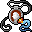

散逸の護符 Amulet of dissipation
英語版 CrawlWiki の記事「Amulet of dissipation」(0.34 向け、2026-03-08 版)の翻訳です。原文の著者は編集履歴をご覧ください。
| 種類 | 装身具 |
|---|---|
| 名前 | 散逸の護符 |
| アイコン |  |

| 着用者の魔力汚染と、着用者にかかった有害な状態異常が、時間とともに2倍の速さで消えるようにする護符だ。 |
散逸の護符を身に着けると、悪い解除可能な効果と魔力汚染がすべて2倍の速さで減っていく。効果時間を半分にするのではなく、プレイヤーが1回の行動に2倍の時間をかけたものとして扱われる。
戦略
麻痺、苛立ち、石化のような、とんでもなく危険な状態の致死性を下げてくれるので、価値のある護符だ。こうした状態はそもそも受けないのが理想だが、いつもそうできるとは限らない。
この護符が向いているのは、十分に育っていて余裕のあるキャラクターだ。散逸は理屈の上での即死を防ぐには役立つが、多くのモンスターに対しては何の役にも立たない。普段の戦闘で苦戦しているキャラクターは、代わりに反射の護符のような戦闘向けの護符を着けたほうがいい。
解除可能な効果の多くは意志力で抵抗できる(すべてではない)ので、意志力が十分にあればこの護符の出番は少し減る。それでも、女郎蜘蛛の麻痺やゾットの罠のように、意志力をまったく無視する効果もある。
変更履歴
- この護符は0.34で追加された。
| 装身具 | |
|---|---|
| 護符 | 軽業師 • 化学 • 散逸 • 信仰 • 守護霊 • 魔力再生 • 反射 • 再生 • 野生化 |
| 指輪 | 器用さ • 躱し身 • 飛行 • 知性 • 魔力 • 耐毒 • 生命力保護 • 護り • 耐冷 • 耐火 • 腐食阻止 • 霊視 • 殺戮 • 腕力 • 意志力 • 魔術 |